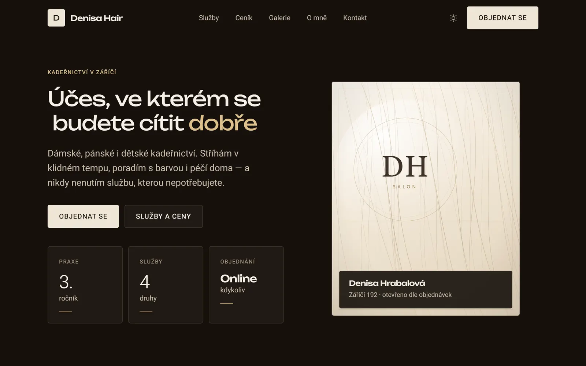

Full-stack Developer
Filip Lochman
Proměňuji komplexní nápady v responzivní a bezpečné webové aplikace s důrazem na detail a výkon.
Expertise
Frontend
Vývoj vysoce výkonných a plně responzivních uživatelských rozhraní. Zaměřeno na špičkovou optimalizaci a intuitivní digitální zážitek na všech typech zařízení.
- HTML5 · CSS3 · JavaScript
- Responzivní design & Přehlednost
- Výkon & Přístupnost
- Vanilla JS bez frameworků
Backend & Databáze
Návrh a implementace robustní serverové logiky a bezpečné správy dat. Vývoj škálovatelných systémů, které zajišťují bezchybný chod, stabilitu a vysokou úroveň zabezpečení aplikace.
- PHP · MySQL
- Java SE · Kotlin
- Android Studio
- C# · Unity 2D / 3D
Projekty

Motivo je full-stack sociální platforma spojující vzdělávání s herní komunitou. Obsahuje systém úkolů, XP, žebříčky, chat a interakce jako follow či komentáře. Díky pokročilé roli uživatelů (RBAC) a vlastnímu zabezpečenému backendu (PHP/MySQL) nabízí komplexní správu obsahu. Projekt je postaven na robustní architektuře pro maximální uživatelskou angažovanost.

Fanouškovský redesign webové prezentace českého rappera Resta (Restovski), vytvořený jako moderní koncept s důrazem na minimalistický vizuální styl, přehlednou navigaci a plnou responzivitu. Stránka obsahuje biografii, diskografii, koncerty, galerii, informace o spolupracovnících, merch i kontaktní sekci. Součástí je také dynamické filtrování koncertů, světlý a tmavý režim a plynulé animační prvky pro příjemnější uživatelský zážitek.

Vyhlídkář je full-stack webová a mobilní aplikace zaměřená na objevování skrytých vyhlídek, laviček, car spotů a dalších jedinečných míst, která znají především místní. Uživatelé mohou přidávat vlastní lokality, fotografie, hodnocení i komentáře a společně budovat komunitní mapu autentických míst mimo přeplněné turistické atrakce. Projekt využívá interaktivní mapy, geolokaci, vlastní REST API, PostgreSQL s PostGIS pro práci s geodaty, Cloudflare R2 pro ukládání fotografií a OpenAI API pro automatickou moderaci nahraného obsahu. Součástí je také mobilní aplikace postavená pomocí Capacitoru se sdíleným backendem.

Denisa Hair je moderní web a rezervační systém na míru pro kadeřnický salon. Zákazníkům nabízí přehledný online kalendář s výběrem volných časů a automatickým e-mailovým potvrzením. Součástí je blesková administrace, ve které kadeřnice snadno spravuje termíny, mění jejich stavy a ručně zapisuje telefonické objednávky. Celý systém je navržený s důrazem na bleskové načítání, perfektní zobrazení na telefonu i počítači (se světlým i tmavým režimem) a absolutní spolehlivost, která garantuje, že se dva zákazníci nikdy nezarezervují na stejný čas.
Kontakt
Pojďme
spolupracovat.
Jsem otevřen novým projektům a příležitostem.
Otevřen nabídkám